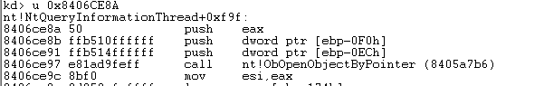

TP_HOOK
NtOpenProcess 190 0xBE
NtOpenThread 198 0xC6
NtReadVirtualMemory 277 0x115
KiAttachProcess
TP_HOOK
TP 是馬哥的帝國研究的game protect
其主要 禁用雙機調試 debug_port清0 HOOK內核函數
此頁主要記錄了其 HOOK的 內核函數
NtOpenThread //防止调试器在它体内创建线程
NtOpenProcess //防止OD等在进程列表看到它
KiAttachProcess //防止其他软件附加它
NtReadVirtualMemory //防止别人读取它的内存
NtWriteVirtualMemory //防止别人在它的内存里面乱写乱画
KDCOM.dll:KdReceivePacket //这两个是COM串口的接受和发送数据
KDCOM.dll:KdSendPacket //主要用来方式别人双机调试
NtGetContextThread //tp未hook
NtSetContextThread
DbgkpQueueMessage
DbgkpSetProcessDebugObject
NtOpenProcess 190 0xBE
將中將 call 一個地址 是一個函數地址記為A
地址A偏移0x220處 一call 地址被TP 替換為自己的過濾函數

anti-anti
不可直接返回修改會正確的call地址 TP有檢測
從push eax開始 或更上面 jump到自己函數 自己函數中調用正確原call
自己的函數中需要處理 讓TP的進程執行被TPhook的代碼 而調試器執行正確的原內核代碼 (因為TP 自己會調用NtOpenProcess以能打開保護進程 作為發現調試)
anti-anti example
//*.h
//繞過 TP NtOpenProcess 的 自定義函數
#pragma LOCKED_MEMORY
VOID AntiTpNtOpenProcessCode();
//繞過 TP NtOpenProcess 的 HOOK
#pragma PAGE_MEMORY
VOID HookInlineNtOpenProcess();
//繞過 TP NtOpenProcess 的 HOOK 恢復
#pragma PAGE_MEMORY
VOID UnhookInlineNtOpenProcess();
//返回當前進程 是否是 自己的調試器
#pragma PAGE_MEMORY
BOOLEAN __stdcall IsAntiTpCall();
//.cpp
//自己hook位置
ULONG anti_tp_ntopenprocess_hook;
//內核原call的地址
ULONG anti_tp_ntopenprocess_call;
//自定義函數 返回內核位置
ULONG anti_tp_ntopenprocess_jump;
//執行TP call 地址
ULONG anti_tp_ntopenprocess_call_hook;
#pragma PAGE_MEMORY
BOOLEAN __stdcall IsAntiTpCall()
{
PEPROCESS eProcess=PsGetCurrentProcess();
WCHAR name[MAX_PATH]={0};
GetProcessName(name,sizeof(name),eProcess);
//調試器名字
if(!wcscmp(name,L"OllyICE1.1-2.exe"))
{
KdPrint(("OllyICE1.1-2.exe\n"));
return TRUE;
}
return FALSE;
}
__declspec(naked)
#pragma LOCKED_MEMORY
VOID AntiTpNtOpenProcessCode()
{
__asm
{
push eax;
pushfd;
call IsAntiTpCall;
cmp al,0;
je ANTI_TP; //如果不是調試器調用 轉到TP的hook代碼執行
//繞過TP
popfd;
pop eax;
//自己原內核代碼
push eax;
push dword ptr [ebp-0xF4];
push dword ptr [ebp-0xF0];
call anti_tp_ntopenprocess_call;
jmp anti_tp_ntopenprocess_jump;
ANTI_TP:
popfd
pop eax;
//執行 TP hook 代碼
push eax;
push dword ptr [ebp-0xF4];
push dword ptr [ebp-0xF0];
jmp anti_tp_ntopenprocess_call_hook;
}
}
#pragma PAGE_MEMORY
VOID HookInlineNtOpenProcess()
{
//獲取NtOpenProcess 地址
anti_tp_ntopenprocess_jump=GetCurSsdtFunctionAddr(0xBE);
anti_tp_ntopenprocess_jump+=0x29;
//KdPrint(("call 0x%08X\n",anti_tp_ntopenprocess_jump));
__asm
{
push eax;
push ebx;
mov eax,anti_tp_ntopenprocess_jump;
xor ebx,ebx;
mov ebx,[eax];
add ebx,0x4;
add ebx,eax;
//tp anti hook call ; push eax
add ebx,0x220;
mov anti_tp_ntopenprocess_hook,ebx;
//原 call 地址
add ebx,0xE;
xor eax,eax;
mov eax,[ebx];
add eax,0x4;
add eax,ebx;
mov anti_tp_ntopenprocess_call,eax;
//anti anti jump
add ebx,0x4;
mov anti_tp_ntopenprocess_jump,ebx;
//hook
//去除页面保护
cli;
mov eax,cr0;
and eax,not 10000h; //and eax,0FFFEFFFFh
mov cr0,eax;
xor eax,eax;
mov eax,anti_tp_ntopenprocess_hook;
mov BYTE ptr [eax],0xE9;
inc eax;
xor ebx,ebx;
mov ebx,AntiTpNtOpenProcessCode;
sub ebx,eax;
sub ebx,4;
mov [eax],ebx;
//恢复页面保户
cli;
mov eax,cr0;
or eax,10000h;
mov cr0,eax ;
sti;
pop ebx;
pop eax;
}
anti_tp_ntopenprocess_call_hook=anti_tp_ntopenprocess_jump-5;
KdPrint(("anti_tp_ntopenprocess_hook 0x%08X\n",anti_tp_ntopenprocess_hook));
KdPrint(("anti_tp_ntopenprocess_call 0x%08X\n",anti_tp_ntopenprocess_call));
KdPrint(("anti_tp_ntopenprocess_jump 0x%08X\n",anti_tp_ntopenprocess_jump));
KdPrint(("anti_tp_ntopenprocess_call_hook 0x%08X\n",anti_tp_ntopenprocess_call_hook));
//CHAR code[8]={0};
}
#pragma PAGE_MEMORY
VOID UnhookInlineNtOpenProcess()
{
__asm
{
push eax;
push ebx;
//去除页面保护
cli;
mov eax,cr0;
and eax,not 10000h; //and eax,0FFFEFFFFh
mov cr0,eax;
mov eax,anti_tp_ntopenprocess_hook;
//50 ff b5 0c
xor ebx,ebx;
mov ebx,0x0CB5FF50;
mov [eax],ebx;
add eax,4;
//ff ff ff ff
xor ebx,ebx;
mov ebx,0xFFFFFFFF;
mov [eax],ebx;
//恢复页面保户
cli;
mov eax,cr0;
or eax,10000h;
mov cr0,eax ;
sti;
pop ebx;
pop eax;
}
}
NtOpenThread 198 0xC6
將中將 call 一個地址 是一個函數地址記為A
地址A偏移0x202處 一call 地址被TP 替換為自己的過濾函數

anti-anti
不可直接返回修改會正確的call地址 TP有檢測
KiAttachProcess
TP inline hook 此函數
目前 直接恢復 便可
KiAttachProcess 定位
KiAttachProcess未導出 KaAttachProcess函數在偏移0x7E的位置 調用了KiAttachProcess 故可根據KaAttachProcess 定位KiAttachProcess
//獲取 KeAttachProcess 地址 UNICODE_STRING fun_name; RtlInitUnicodeString(&fun_name,L"KeAttachProcess"); address=(ULONG)MmGetSystemRoutineAddress(&fun_name);